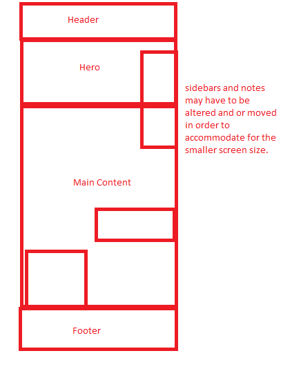

Original Source PDF
website_page envato.comProposal for a mobile/narrow version
spec of current website:
spec.htmlFinal Site
index.htmlI used a few sources for my final site, primarily:
For my general goal of the site, I made a website on the process of creating a 3D model (modeling, UV unwrapping, texturing, rendering).
I think it's a really interesting subject, as I've been 3D modeling for a few years, and I think it was deserving of a small site.
It's also a simple enough subject such that final product the site only spans one page.
This goal helped me locate a design that I found interesting and difficult enough to create a website with.
I chose my design because it was easy and seemed very fun. It allows me to create notes and comments next to a large hero image that spans the entire site.
The user is constantly looking at an image as they scroll through the site.
I don't really have any notes for this project so far. I thought my CSS and HTML was pretty solid, though there is always room for improvement.
I cleaned up my existing CSS and HTML from the previous phase, making it cleaner and more readable.
One spot I thought I went above and beyond on was creating the arrow next to the "evolution" header. I thought the solution I found was really smart.